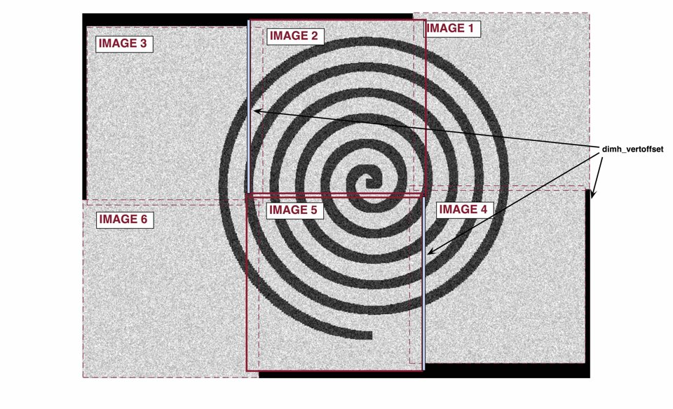

Getting Started: Stitch¶
I. OVERVIEW
The ‘RP_stitch’ analysis takes the raw images outputted from the CG-1D beamline and stitches the images together, as well as applying the necessary image corrections.
II. HOW TO USE
First, open the ‘user_config’ text file in your ‘Root_Processing’ directory. The first line will be ‘1. STITCH’, with the following 9 lines specifying the parameters used in the analysis. In order, they are:
- image_filename: this is the directory name where the raw files are to be found. Our raw files are in the ‘Sample_Data/raw’ directory. These are the images directly outputted by the CG1D beamline, and will have integer values (i.e. not corrected to transmission values).
- output_filename: this is the directory name where the images will be saved. The program will automatically make a ‘stitched’ directory if not already present, so there is no need to create one manually.
- output_fileformat: this is the filename format you would like your images to be saved as.
- fileformat: this is the fileformat of the image to be outputted. The CG1D beamline outputs images in a ‘YYYYMMDD_filename_secondsexposed’ format, so this is what you will write here.
- dimv_horzoffset: this is the horizontal offset value (i.e. overlap) between two images in the vertical dimension.
Essentially, this is the overlap between two horizontally adjacent images:
- dimv_vertoffset: this is the vertical offset value between two images in the vertical dimension.
Essentially, this is how much an image “drifts” downward with each table shift:

- dimh_horzoffset: this is the horizontal offset value between two images in the horizontal dimension.
Essentially, this is the overlap between two vertically adjacent images:

- dimh_vertoffset: this is the vertical offset value between two images in the horizontal dimension.
Essentially, this is how much an image “drifts” leftward between each table shift:
- stitch_order: this is the array that specifies the order in which you would like to stitch your images. The first two values indicate the number of (1) rows and (2) columns of raw images that your final stitched image will have. The following numbers will specify the number label for each position, starting from row 1, column 1 (top left corner), and moving column by column, then moving on to the next row.
So, using our sample data, we have 6 images to stitch, with 3 images per row, and 2 images per column. So we will specify a 1x8 array, with the first two numbers being 2 and 3. From here, we will specify the image position. Our images are called ‘19000101_Image_0060_0001.tiff’, ‘19000101_Image_0060_0002.tiff’, etc. Our ‘fileformat’ parameter specifies the image name prefix (‘19000101_Image_0060’), so we will only need to specify the numbers here. We want image 3 in the top left corner, with image 2 and then image 1 in the top middle and top right sections, respectively. For the bottom row, we want images 6, 5, and 4 in the left, middle, and right sections, respectively. Placing these numbers after the first two values in the 1x8 array will give us the final ‘stitch_order’ parameter.
III. RUNNING THE CODE
This analysis can be conducted using the [‘RP_stitch’] string in the ‘RP_run’ module.